Step 1: Image Processing
We start with an image that we wish to obtain data from. In the Program Installation directory, there is a file called called <INSTALLDIR>/Samples/I2XFORMSAMPLE.TIF. We can start with other images, and we even can acquire images from any TWAIN compliant scanner if desired by clicking Scan->Acquire Image.
Before you begin, please install the I2X Sample pack from the sample directory at Noctusoft. You can download it by clicking here. Once you have downloaded and installed the sample pack:
1. Select an image to convert to XML.
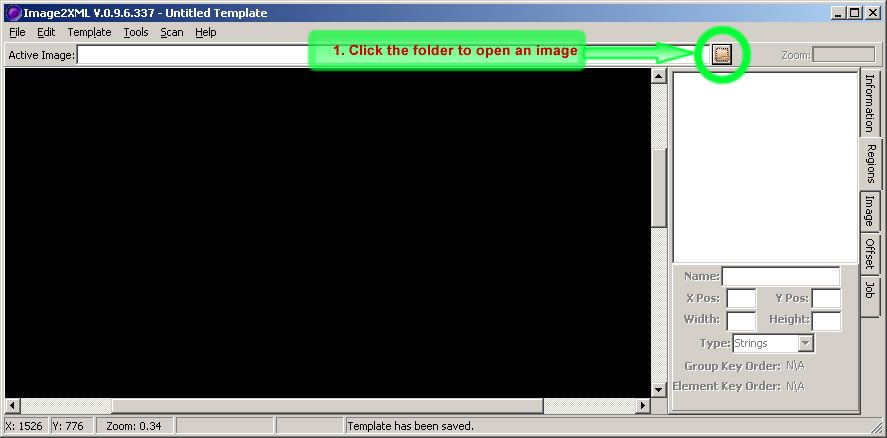
2. Select the Sample image that was installed with the sample pack.
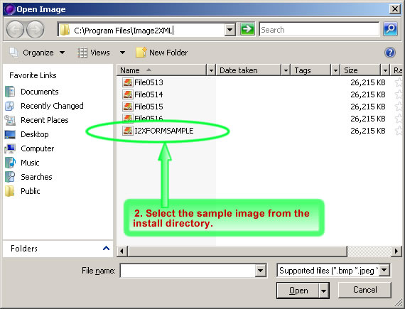
3. You should now see the following image, go the the Image Tab
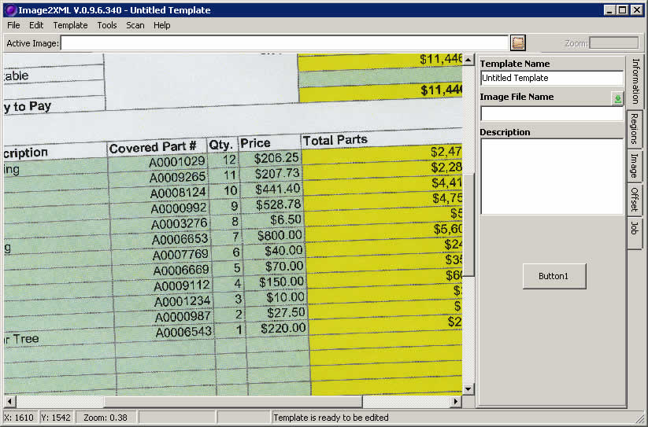
4. Select Grey Threshold, make it a value 100 and select single image instruction button
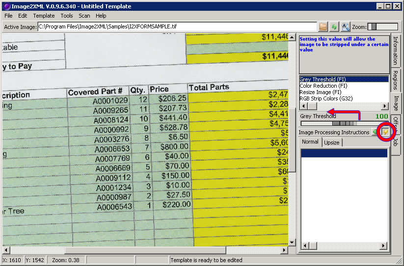
5. Note that the lines have disappeared somewhat, we can do better. Click the refresh button to get the image before it was manipulated.
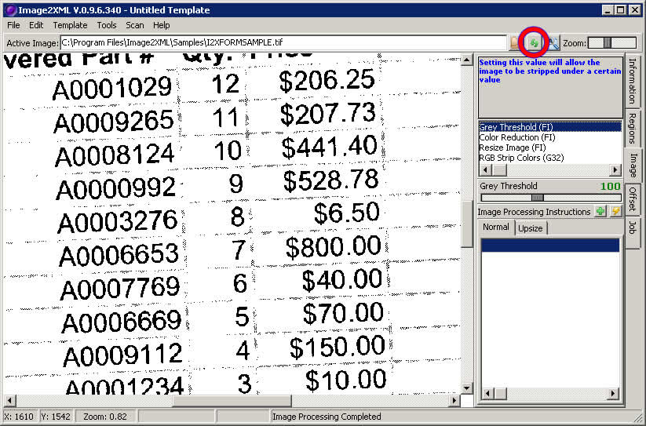
6. Select Grey Threshold, make it a value 60 and select the single image instruction button again
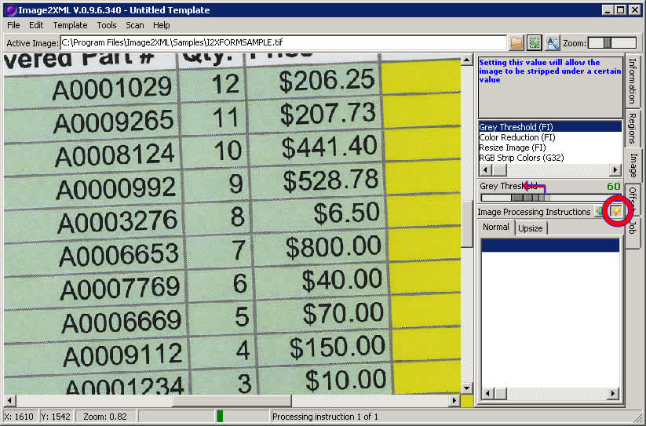
7. Note that the lines have disappeared, but the text remains. We like this. Click the green plus sign to add the Image instructions to the template
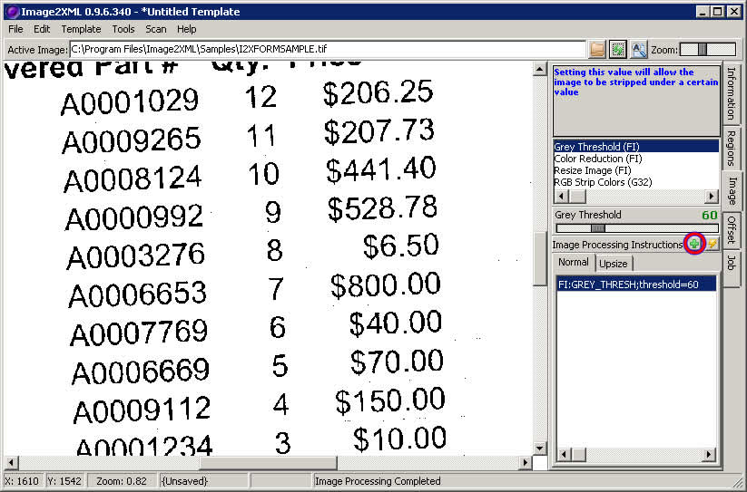
9. The Form is crooked, this makes will make it difficult to extract data from the form. We need to deskew the form. Select deskew and press the single image instruction button as shown below.
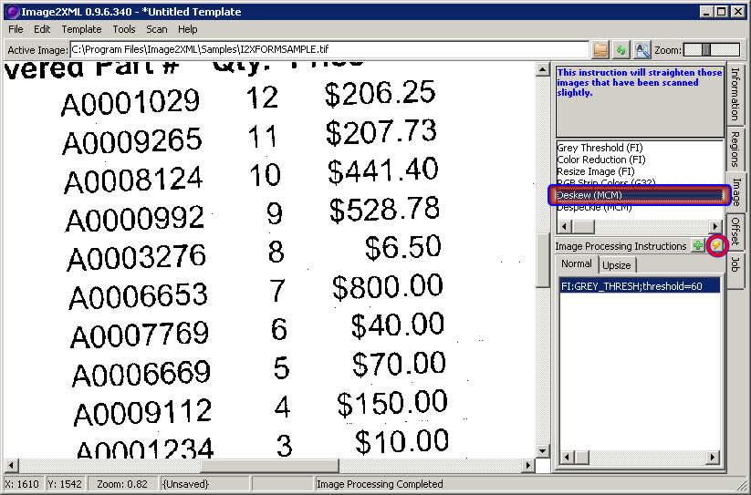
8. The the form has now been straightened, this is a prime candidate for optical character recognition processing. Click the green plus sign to add the instruction to the template.
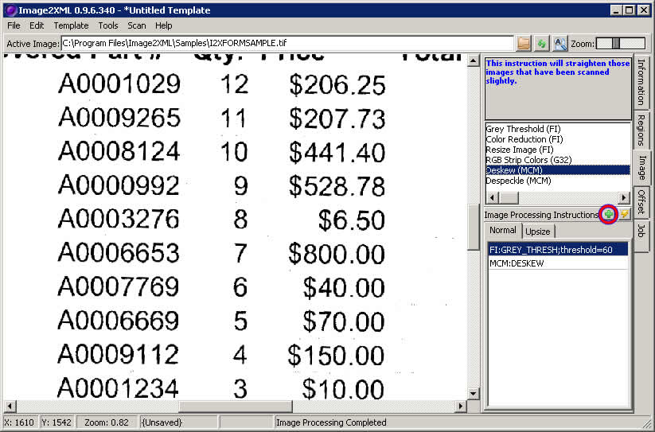
9. We now have an image ready to processed. Click either Control+S or File->Save to save this template.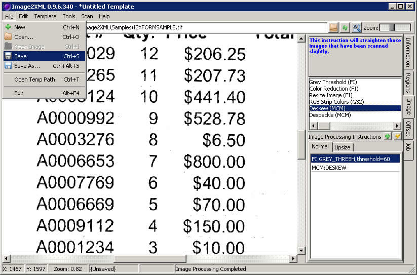
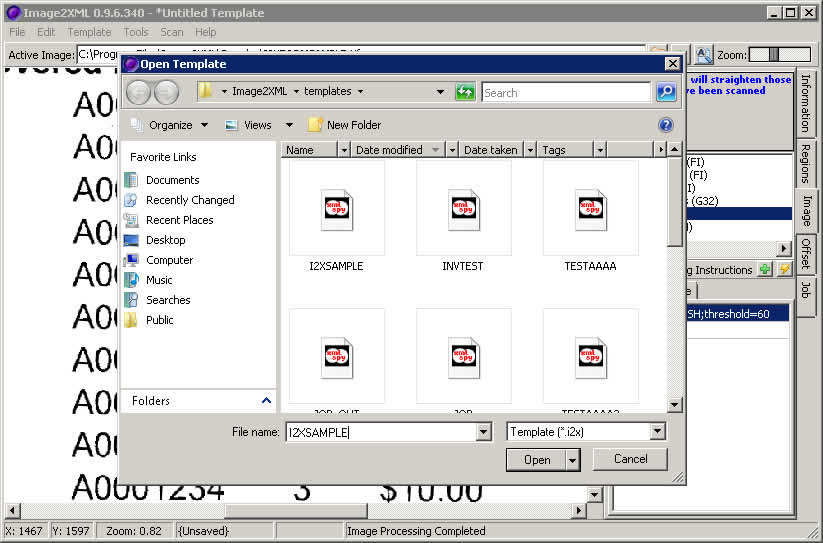
After we saved this template, we are now ready to draw regions around the data we want to identify. Click here to continue to the next walk through
Copyright © 2009, NoctuSoft, Inc.
This help file has been generated by the freeware version of HelpNDoc